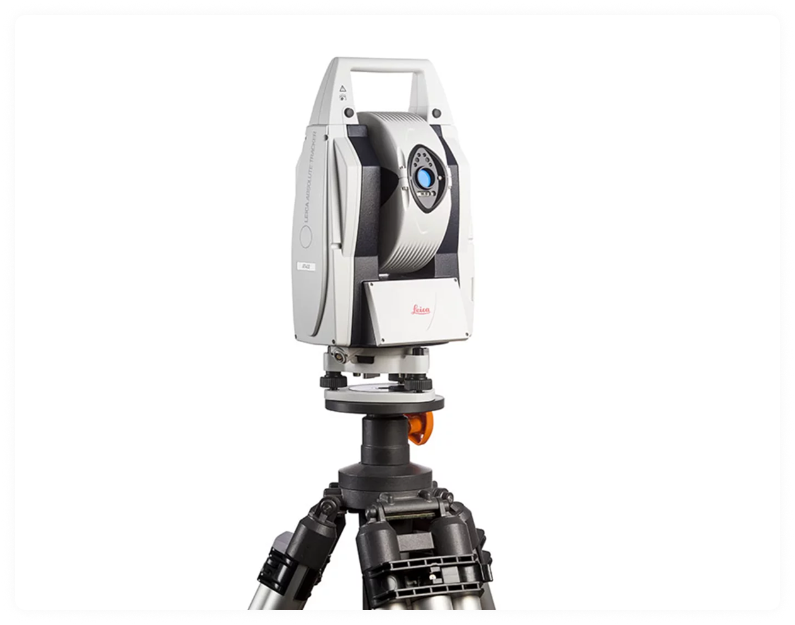
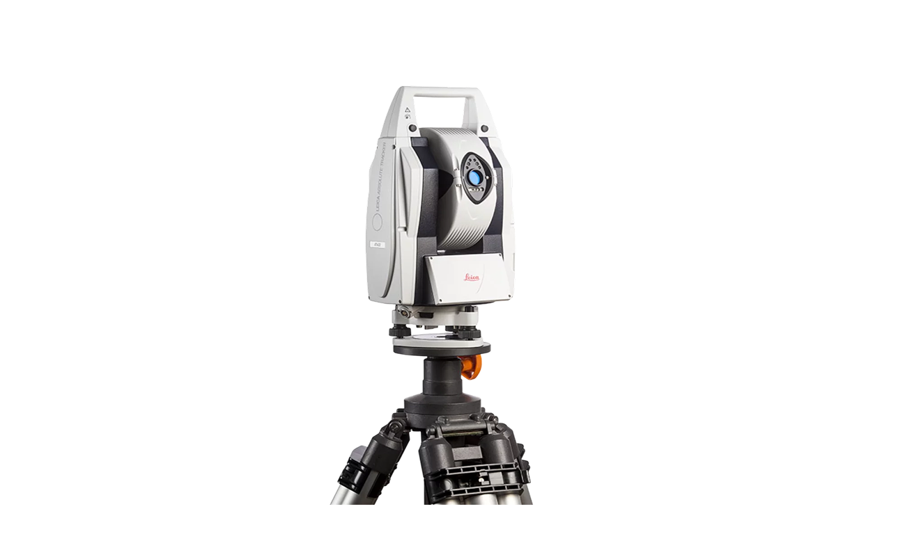
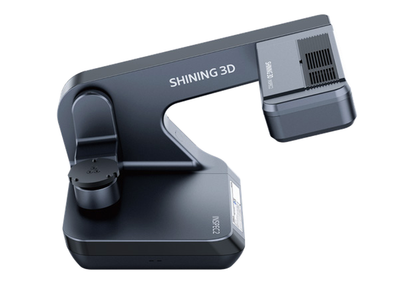

Equipped with globally certified 3D optical scanners, laser trackers, coordinate measuring arms, and industry-standard metrology software.

The SIMSCAN GEN2 is the benchmark portable 3D scanner engineered for high-precision measurement in tight spaces and challenging shop floor environments. Weighing only 570 grams, its full-metal aerospace housing offers unprecedented ergonomics without compromising rigidity.


The NimbleTrack GEN2 revolutionizes 3D metrology by providing complete wireless optical tracking freedom. It eliminates the time-consuming step of sticking target markers onto components, making it ideal for in-cabin automotive testing, fixture setup, and rapid shop-floor verification.
The Leica Laser Tracker represents the pinnacle of large-scale coordinate metrology. With an active measurement envelope of up to 80 meters diameter, it ensures sub-millimeter precision across massive aerospace assemblies, power turbine alignments, and heavy rail infrastructure.


The FARO Arm is the world's most trusted articulated portable CMM. Combining high-accuracy contact hard probing with non-contact laser line scanning, it provides the versatility required for rapid first-article inspection, engine blocks, and machine tooling validation.
The AutoScan Inspec2 is a specialized desktop 3D inspection scanner engineered to capture small, complex components with 0.010 mm (10 µm) metrology-grade accuracy. Its automated 3-axis turntable rotates the part seamlessly to capture every angle with full-color textures.

World-class measurement hardware requires equally powerful software processing to extract actionable CAD features and GD&T quality inspection.
The enterprise 3D dimensional analysis platform. We use PolyWorks for CAD alignment, surface deviation heatmaps, and GD&T compliance tables.
The gold standard in reverse engineering software. Converts raw 3D point clouds directly into parametric CAD models with full design history.
Comprehensive inspection automation software used for automated first-article reporting, trend analysis, and pass/fail quality criteria.
Native CAD modeling platforms for automotive and aerospace components, ensuring 100% interoperability with client engineering databases.
Speak directly with founder Amol Palande and our metrology engineers. We will analyze your drawing tolerances and recommend the most cost-effective hardware.